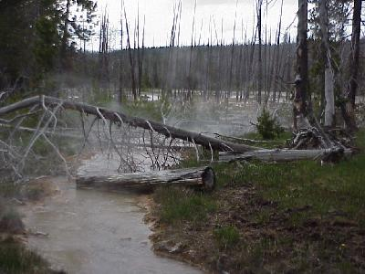
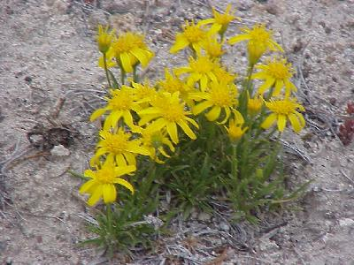

| We started the day early, checking out at 7:45. The weather was good, which fit in well with a long day of sight seeing planned. | |
| Back into the mountains, and some real beauty. The views were big, with large valleys, big hills & mountains, long views. | |
| But there was also a lot to look at on the smaller scale. Many of the wild flowers were in bloom, which made for a good contrast with the BIG views. | |
| And there were a lot of wild flowers to look at, tons of yellows (yes including dandelions, but I did not waste the space to put one of those in here). | |
| Quite a few white wild flowers, | |
| and a few blue ones. | |
| There were also a lot of large mammals to see today -
some 8 herds of buffalo, 6 herds of elk, and a small herd
of prong horn antelope. One of the herds of buffalo had a lot of calves, like this one. |
|
| We spotted this coyote trotting across one field, he ultimatley came in close enough for this picture, but not for long - he inspected an elk carcass and moved on. | |
| Speaking of elk, shades of Banff, elk all over,
including "city elk" around some of the park
facilities. These guys seem to be able to get along with man quite well (as long as we are not driving 60 MPH when we meet one), the question seems to be "How well can we get along with the elk in these settings?" This elk was out in the park and still barely noticed the cars and people. |
|
| One of the herds of elk we ran across was a group of bulls. | |
| But wait, we are at Yellowstone, where is all the steam, geysers, and boiling mud? We did see some of that today, like this boiling pool; | |
| the boiling mud (sorry if this is a little off, it took me a few tries to get a picture this good!); | |
| steam vents; and | |
| and steaming streams. |  |
| And, in parting for the day, just a few more pictures of the mountains, valleys, and other big views, | |
| and wild flowers, and such small views. |   |
| Hopefully you find this page worth the
wait - I know I put a lot more pictures on this page than
any of the past ones. Well, we are far from high season here in Yellowstone, but the campgrounds are full anyway, so we had to drive out of the park to find a place to stay. We landed at the Grizzley Hotel in Silver Gate, Montana, just a few miles from the North-East Yellowstone Entrance - it was starting to rain again as we pulled in, so I was glad not to be camping. Wildlife for the day included: yellow-bellied marmot (1); mule deer (3); elk (56); buffalo (160); prong horn antelope (4); and coyote (1). |
|